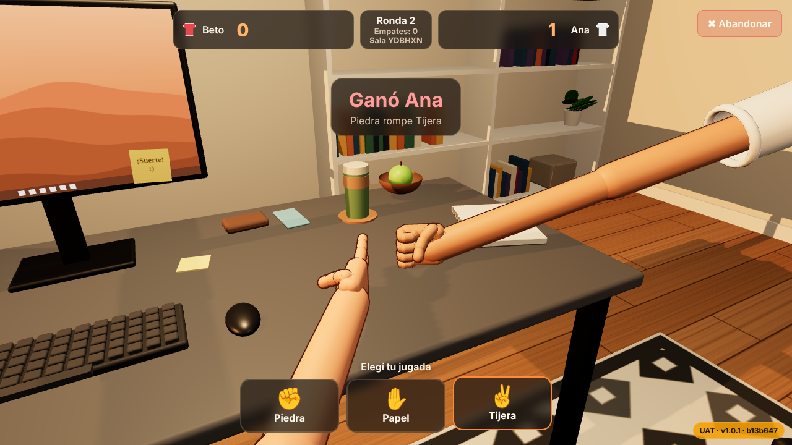
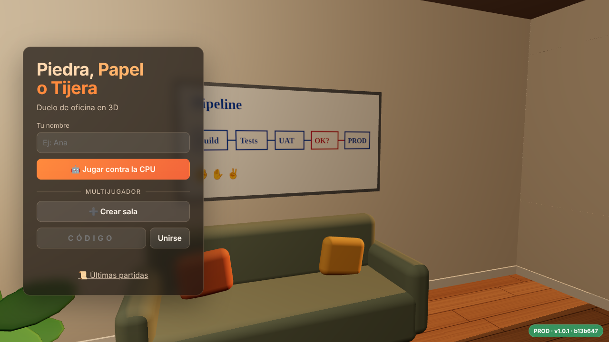
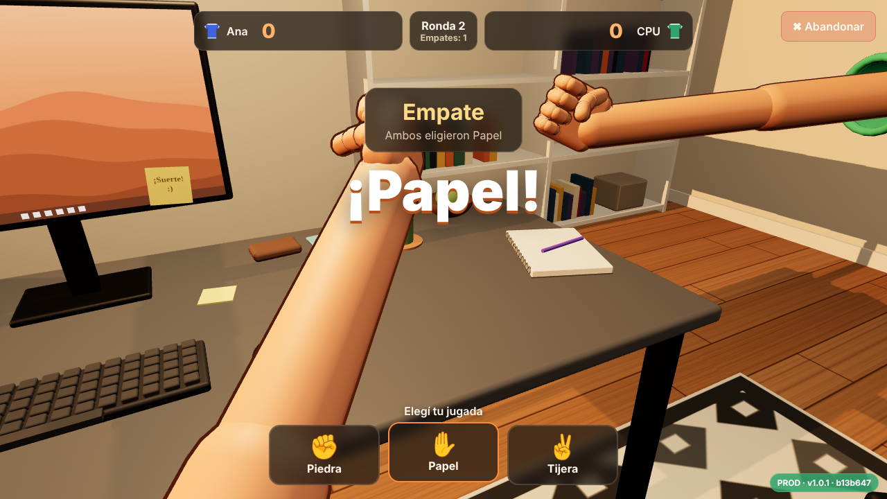
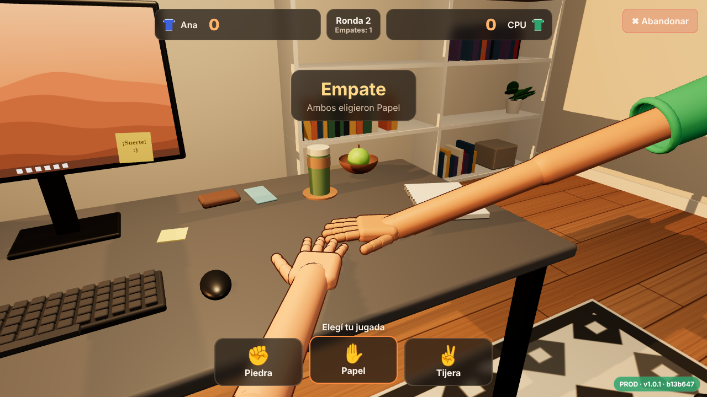
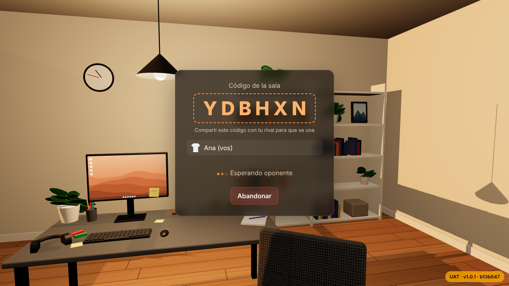

| Integrantes | [Nombre Apellido 1] · [Nombre Apellido 2] · [Nombre Apellido 3] |
| Grupo | [Lunes y Viernes / Martes y Miércoles] |
| Docente | [Nombre del docente] |
| Repositorio | https://github.com/[OWNER]/piedra-papel-tijera-3d |
| Fecha | Noviembre 2026 |
Se desarrolló un juego web de Piedra, Papel o Tijera en 3D, con un modo contra un oponente virtual
aleatorio y un modo multijugador en tiempo real. La aplicación se compone de tres módulos Maven
(game-core, rooms y web) escritos en Java 21 con Spring Boot 3.5.
Tiene 74 pruebas unitarias y 9 pruebas de integración.
El ciclo de vida completo está automatizado con un pipeline declarativo de Jenkins versionado en el
repositorio (Jenkinsfile). El pipeline se dispara con cada push a GitHub (webhook) y hace lo siguiente:
Jenkins corre en Docker y se configura como código (JCasC + Job DSL). Así cualquier integrante reproduce el entorno con un solo comando.
La consigna aclara que el foco no es la funcionalidad sino el proceso de CI/CD. Aun así, se eligió una aplicación que integra módulos con responsabilidades bien distintas (reglas, salas multijugador, web y persistencia), para que las pruebas unitarias e integradas tengan sentido real:




| Módulo | Responsabilidad | Pruebas |
|---|---|---|
game-core | Reglas del juego (las 9 combinaciones), oponente virtual con generador inyectable y marcador. Sin dependencias externas. | 34 unitarias (JUnit 5, parametrizadas) |
rooms | Salas de 2 jugadores: código único de 6 letras (sin I/O para evitar confusiones), validación de nombres, colores de camiseta únicos por sala, resolución de rondas y marcador. Thread-safe (métodos sincronizados). | 30 unitarias |
web | Aplicación Spring Boot: API REST del modo PvE, WebSocket del modo PvP, historial con Spring Data JPA + H2, health check de Actuator, /api/info con ambiente y versión, y el frontend estático 3D. | 10 unitarias (Mockito, @WebMvcTest) + 9 de integración |
| Endpoint | Uso |
|---|---|
POST /api/pve/sessions | Crea una partida PvE (nombre → id, colores de jugador y CPU). |
POST /api/pve/sessions/{id}/rounds | Juega una ronda: el servidor elige la jugada de la CPU y devuelve el resultado y el marcador. |
DELETE /api/pve/sessions/{id} | Abandonar la partida. |
WS /ws/game | Cliente → servidor: CREATE, JOIN, MOVE, LEAVE.
Servidor → cliente: JOINED, ROOM_STATE (indica si el rival ya eligió, sin revelar la jugada),
ROUND_RESULT, PLAYER_LEFT, ERROR. |
GET /api/history, GET /api/info, GET /actuator/health | Historial, ambiente/versión desplegada y salud. Los dos últimos los usan los smoke tests del pipeline. |
Los “ambientes simulados” son contenedores Docker independientes, con puerto, variables (APP_ENV) y volumen
de datos propios. Jenkins, UAT y PROD comparten la red rps-net. Así los smoke tests llaman a
http://rps-uat:8090 por nombre, y el usuario accede por localhost:8081/8082.
La interfaz muestra siempre un badge con el ambiente, la versión (1.0.<build>) y el commit: así se distingue
a simple vista qué versión corre en cada lugar.
| Etapa | Qué hace |
|---|---|
| Checkout | Obtiene el commit, calcula la versión 1.0.${BUILD_NUMBER} y renombra el build con versión y commit. Da permisos de ejecución a mvnw y a los scripts (necesario si se commitean desde Windows). |
| Build | ./mvnw -B -ntp clean package -DskipTests: compila los 3 módulos en orden (reactor de Maven). |
| Pruebas unitarias | ./mvnw test (Surefire). Publica los reportes JUnit en Jenkins, con tendencia de pruebas por build. |
| Pruebas de integración | ./mvnw verify -DskipUTs=true (Failsafe ejecuta las clases *IT: levantan Spring Boot completo en puerto aleatorio, con H2 y WebSocket reales). Archiva el JAR con fingerprint. |
| Imagen Docker | docker build con APP_VERSION y APP_COMMIT horneados en la imagen rps3d:1.0.N. |
| Deploy UAT | scripts/deploy.sh uat: guarda la versión actual como uat-previous, reemplaza el contenedor y ejecuta scripts/smoke-test.sh, que verifica health, ambiente, versión, frontend y una ronda real. Si falla, hace rollback de UAT. |
| Aprobación QA (UAT) | Paso input con decisión (Aprobar / Rechazar), notas de QA y registro del usuario que decidió (submitterParameter). Timeout de 2 h. Ver sección 7. |
| Deploy Producción | Solo si se aprobó (when). Despliega la misma imagen en rps-prod y ejecuta el smoke test. Si falla, se dispara el rollback automático a prod-previous. |
Opciones globales: disableConcurrentBuilds() (evita que dos builds pisen el mismo ambiente),
timestamps(), retención de 20 builds y timeout global de 4 h. Los bloques post informan el
resultado: éxito, fallo, rechazo en UAT (UNSTABLE) o aborto.
triggers del Jenkinsfile recién quedan activos después de la primera
ejecución (ver sección 9).| Nivel | Clases | Cant. | Qué valida |
|---|---|---|---|
| Unitarias (Surefire) | GameRulesTest, MoveTest, RandomOpponentTest, ScoreboardTest | 34 | Las 9 combinaciones, la simetría de resultados, el parseo en español/inglés, la distribución uniforme con semilla fija y el marcador. |
RoomManagerTest, RandomRoomCodeGeneratorTest, ColorAssignerTest, PlayerNamesTest | 30 | Crear/unirse/sala llena/inexistente, nombres repetidos, colores siempre distintos (200 salas), colisión de códigos con reintento, rondas, empates, salir y limpieza. | |
PveServiceTest, PveControllerTest | 10 | Servicio PvE con CPU determinista e historial mockeado. Capa HTTP aislada (@WebMvcTest) con validaciones y códigos 400/404. | |
| Integración (Failsafe) | PveApiIT | 2 | HTTP real → controlador → servicio → core → H2: partida de 5 rondas, marcador consistente, historial persistido, fin de sesión. |
PvpWebSocketIT | 3 | Dos clientes WebSocket reales: crear sala, unirse, que la jugada no se revele antes de tiempo, ganador, empate, abandono y cierre del navegador. | |
MatchRecordRepositoryIT | 1 | Persistencia JPA y orden del historial. | |
ApplicationSmokeIT | 3 | Arranque completo: health UP, /api/info, frontend 3D y Three.js servidos. | |
| Smoke (post-deploy) | scripts/smoke-test.sh | — | Sobre el contenedor desplegado: health, ambiente/versión esperados, HTML y una ronda PvE real. |
| Decisión | Justificación |
|---|---|
| Juego de Piedra, Papel o Tijera | Reglas simples y totalmente testeables, que igual permiten tres módulos con responsabilidades reales (reglas, salas multijugador concurrentes y web/persistencia). Un cambio de una línea en las reglas rompe pruebas: ideal para el caso 2 de la demo. |
| Java 21 + Spring Boot 3.5 (Maven multimódulo) | Requisito de la consigna (Java + Spring). Java 21 es LTS. Spring Boot 3.5 es una línea madura y muy documentada. El reactor de Maven compila y prueba los módulos en orden de dependencias. |
game-core y rooms sin Spring | Lógica pura, rápida de probar (milisegundos) y sin acoplamiento al framework. web los integra como beans (GameConfig). Los generadores aleatorios son inyectables para tener pruebas deterministas. |
| REST para PvE, WebSocket “crudo” para PvP | El PvE es pedido-respuesta, y REST lo hace fácil de probar y de usar en el smoke test. El PvP necesita push del servidor: se eligió WebSocket con mensajes JSON propios (sin STOMP) para no agregar una librería cliente y controlar el protocolo. |
| Persistencia: H2 en archivo + JPA | La consigna deja libre la persistencia. H2 embebida evita levantar otro servicio. Cada ambiente tiene su volumen Docker (rps-data-uat, rps-data-prod). En las pruebas se usa H2 en memoria. |
| Three.js con modelado procedural | No requiere assets externos con licencias ni un pipeline de modelado: la oficina se genera con primitivas, texturas en canvas y un PRNG con semilla (se ve igual siempre). Three.js se sirve localmente (/vendor): funciona sin internet en la demo. |
| Manos articuladas (3 falanges por dedo) con poses interpolables | Permite animar el ritmo y transicionar a cada jugada con easing. El contorno estilo caricatura se logra con un casco invertido en el shader (similar a la imagen de referencia). |
| Jenkins en Docker + JCasC + Job DSL | Infraestructura como código: usuarios, seguridad, credenciales y job versionados. Cualquiera de los 3 integrantes levanta el mismo Jenkins con un comando, sin pasos manuales en la UI. |
| Docker como ambientes UAT/PROD | Aislamiento real (puerto, variables, datos), idéntico en Windows y macOS (Docker Desktop) y fácil de reiniciar o hacer rollback cambiando la imagen. |
| Promoción de la misma imagen | Lo que QA aprueba en UAT es exactamente lo que llega a producción (no se recompila). La versión y el commit van dentro de la imagen. |
| Socket de Docker montado (DooD) | Más simple y liviano que Docker-in-Docker. Riesgo: Jenkins tiene control del Docker del host. Es aceptable en un entorno local de curso, y se documenta. |
| Webhook vía ngrok + polling de respaldo | Jenkins corre en una PC sin IP pública. ngrok expone /github-webhook/ por HTTPS. Si el túnel cae en la demo, el pollSCM garantiza el disparo en ≤ 2 min. |
Maven Wrapper (mvnw) | Jenkins y los integrantes usan exactamente Maven 3.9.11 sin instalarlo. |
| Aprobación con decisión explícita (no solo “Proceed/Abort”) | Un rechazo deja trazabilidad: quién, cuándo, por qué (uat-rechazo.txt archivado) y estado UNSTABLE, distinto de un fallo técnico (FAILURE). |
Además de DEV (máquina del desarrollador) y PROD, se simula un ambiente de pruebas de aceptación de usuario
(UAT) en el contenedor rps-uat (puerto 8081, badge naranja). Cada versión que pasa las pruebas
automáticas se instala primero en UAT. El pipeline se detiene en la etapa Aprobación QA (UAT) hasta que
una persona decida desde Jenkins.
/job/piedra-papel-tijera-3d/lastBuild/input/), elige
Aprobar, describe lo probado y presiona Enviar decisión.Se simula un defecto que las pruebas automáticas no detectan: en index.html, el botón de Piedra
muestra el texto “Papel”. El pipeline pasa todas las pruebas y despliega en UAT. Durante la prueba manual, QA lo detecta.
uat-rechazo.txt con versión, commit, autor, quién rechazó y notas;
(b) marca el build como UNSTABLE con la descripción del rechazo; (c) omite el deploy a producción.scripts/status.sh:
uat {"env":"UAT","version":"1.0.3","commit":"b13b647",...}
prod {"env":"PROD","version":"1.0.1","commit":"b13b647",...}| # | Acción | Responsable |
|---|---|---|
| 1 | Rechazar en Jenkins con una descripción reproducible (pasos, resultado esperado y obtenido). | QA |
| 2 | Abrir un issue en GitHub con la versión (1.0.N), el commit y el link al build rechazado. | QA / líder |
| 3 | Evaluar el impacto en UAT: si bloquea otras pruebas, scripts/rollback.sh uat restaura la versión anterior. Si no, se deja para reproducir el error. | Desarrollo |
| 4 | Corregir en una rama fix/…, agregar una prueba automática que cubra el caso cuando sea posible, y abrir un PR con revisión de otro integrante. | Desarrollo |
| 5 | Merge a main: nuevo pipeline → nueva versión en UAT → QA vuelve a probar el caso y una regresión básica. | Pipeline / QA |
| 6 | Con la aprobación, la versión corregida pasa a producción. El issue se cierra referenciando el build. | QA |
Además, si una versión aprobada fallara el smoke test en producción, el pipeline ejecuta automáticamente
scripts/rollback.sh prod. También existe la opción de rollback manual (ver instructivo).
El rollback de UAT se probó: UAT volvió de 1.0.3 a 1.0.1 en segundos.
La guía detallada, con la tabla de problemas frecuentes, está en docs/JENKINS_SETUP.md. El guion de la
defensa está en docs/DEMO.md.
mvnw).# macOS / Linux
./mvnw clean verify # 74 unitarias + 9 de integración
./scripts/run-local.sh # http://localhost:8090
# Windows (PowerShell)
.\mvnw.cmd clean verify
.\scripts\run-local.ps1# 1. Variables (repo, contraseñas, token de ngrok)
cp jenkins/.env.example jenkins/.env # Windows: Copy-Item jenkins\.env.example jenkins\.env
# 2. Levantar Jenkins + túnel ngrok
./scripts/setup-jenkins.sh --tunnel # Windows: .\scripts\setup-jenkins.ps1 -Tunnel
# equivalente: docker compose -f jenkins/docker-compose.yml --profile tunnel up -d --build
# 3. Abrir http://localhost:8080 (usuario admin / qa definidos en .env)
# URL pública del túnel: http://localhost:4040Repositorio → Settings → Webhooks → Add webhook. Payload URL
https://<dominio-ngrok>/github-webhook/ (con la barra final), Content type application/json,
evento push. Con GitHub CLI:
gh api repos/OWNER/piedra-papel-tijera-3d/hooks -f name=web -F active=true -f 'events[]=push' \
-f 'config[url]=https://<dominio-ngrok>/github-webhook/' -f 'config[content_type]=json'git push a main → el job piedra-papel-tijera-3d arranca solo../scripts/status.sh o .\scripts\status.ps1..\scripts\rollback.ps1 prod (Windows) o
docker exec rps-jenkins bash -c "cd /var/jenkins_home/workspace/piedra-papel-tijera-3d && scripts/rollback.sh prod".Move.java cambiar case PAPER -> other == ROCK por
other == SCISSORS. Fallan 5 pruebas de GameRulesTest, el pipeline se detiene en
“Pruebas unitarias” y no se despliega nada. Se procede con git revert y push.Durante el desarrollo, el pipeline se ejecutó etapa por etapa (los mismos comandos sh del
Jenkinsfile) dentro de la imagen jenkins/jenkins:lts-jdk21, con acceso al Docker del host:
build, 83 pruebas, imagen, deploy y smoke test en UAT y PROD, caso 2 y rollback.
Observado marca problemas que ocurrieron efectivamente.
Prevenido marca problemas conocidos de este tipo de setup, que se resolvieron en el diseño antes de que aparecieran.
| # | Error / síntoma | Causa | Solución |
|---|---|---|---|
| 1 | Observado -DskipTests en la etapa Build igual ejecutaba las pruebas unitarias. |
En el POM padre, Surefire tenía <skipTests>${skipUTs}</skipTests>. Un valor explícito en la configuración pisa la propiedad de línea de comandos. |
Usar <skip>${skipUTs}</skip>. Así -DskipTests (Build) y -DskipUTs=true (etapa de integración) funcionan de forma independiente. |
| 2 | Observado Caso 2: GameRulesTest con 5 fallas
(resultIsSymmetric y combinaciones 4 y 5). |
Bug intencional en Move.beats: papel le ganaba a tijera. |
El pipeline se detuvo en “Pruebas unitarias”, sin imagen ni deploy. UAT y PROD siguieron en 1.0.1. Se resolvió con git revert + push. |
| 3 | Observado Al construir la imagen de Jenkins, apt-get install docker-ce-cli falló (403 al acceder a deb.debian.org). |
La instalación por apt depende de repositorios externos y de la red (proxy/firewall de la red donde se construye). | Build multi-etapa: COPY --from=docker:29-cli /usr/local/bin/docker. Es un binario estático, sin apt, con un build más rápido y reproducible. |
| 4 | Observado mvnw -pl web -am spring-boot:run fallaba en los módulos game-core / rooms. |
Con -am, el goal spring-boot:run se ejecuta en todos los módulos, y los de librería no tienen clase main. |
scripts/run-local.* primero hace install y después -pl web spring-boot:run. |
| 5 | Observado En una prueba E2E con dos navegadores, el marcador no se actualizaba a tiempo y la animación quedaba “colgada”. | El delta de tiempo por cuadro tenía un tope de 0,05 s. Con pocos FPS (render por software), la animación duraba varias veces más en un cliente que en otro. | Se subió el tope a 0,2 s: la animación dura lo mismo en equipos lentos y los dos jugadores ven el resultado sincronizado. Se re-ejecutó la prueba E2E: marcador 1-0 / 0-1 correcto. |
| 6 | Observado Advertencia en las pruebas: “Mockito is currently self-attaching… Dynamic loading of agents will be disallowed”. | JDK 21 advierte cuando un agente (byte-buddy de Mockito) se carga en tiempo de ejecución. | <argLine>-XX:+EnableDynamicAgentLoading -Xshare:off</argLine> en Surefire y Failsafe. |
| 7 | Observado Los smoke tests no alcanzaban la app cuando Jenkins corría con otra configuración de red. | Dentro de un contenedor, localhost es el propio contenedor. Según cómo corra Jenkins (red rps-net o red del host), la URL correcta cambia. |
Red Docker compartida rps-net, con nombres rps-uat/rps-prod por defecto, y URLs configurables con RPS_UAT_URL/RPS_PROD_URL. |
| 8 | Prevenido permission denied en /var/run/docker.sock. |
La imagen oficial corre como usuario jenkins, y en Docker Desktop el socket pertenece a root. |
user: root en docker-compose.yml (riesgo aceptado y documentado en un entorno local). |
| 9 | Prevenido /usr/bin/env: 'bash\r' y ./mvnw: Permission denied al clonar o commitear desde Windows. |
Fin de línea CRLF y pérdida del bit de ejecución en NTFS. | .gitattributes fuerza LF en *.sh, Jenkinsfile y Dockerfile. La etapa Checkout ejecuta chmod +x mvnw scripts/*.sh. |
| 10 | Prevenido El push no dispara el job hasta haberlo ejecutado una vez a mano. | Los triggers de un Jenkinsfile se registran recién en la primera ejecución. |
El job se crea por Job DSL con githubPush() y pollSCM ya configurados. |
| 11 | Prevenido El webhook responde 302/403. | Payload URL sin la barra final (/github-webhook). |
Documentar la URL exacta con barra final y verificar en Recent Deliveries (respuesta 200). |
[Completar con los fallos que aparezcan al correr el pipeline en sus equipos, por ejemplo con capturas de la Stage View de Jenkins (build en verde, en rojo y pausado en la aprobación).]
| # | Build / etapa | Síntoma (log) | Causa | Solución |
|---|---|---|---|---|
| 12 | ||||
| 13 |
Jenkinsfile) y la configuración de Jenkins como código (JCasC + Job DSL)
hizo que el proceso sea reproducible, revisable en PRs y versionado junto a la aplicación.localhost. Se resolvió con ngrok,
dejando polling como plan B.localhost no es el host) y dependencias
de red al construir la imagen.skipTests, Surefire y Failsafe no es obvia. Hubo que
leer cómo la configuración explícita pisa las propiedades.RoomManager y usando ConcurrentWebSocketSessionDecorator para los envíos.piedra-papel-tijera-3d/
├── pom.xml POM padre (módulos, Surefire/Failsafe, skipUTs/skipITs)
├── mvnw, mvnw.cmd, .mvn/ Maven Wrapper 3.9.11
├── Jenkinsfile Pipeline declarativo
├── Dockerfile, .dockerignore Imagen de la aplicación
├── game-core/ Reglas, oponente, marcador (+ 34 pruebas)
├── rooms/ Salas PvP (+ 30 pruebas)
├── web/ Spring Boot + frontend 3D (+ 10 unitarias, 9 IT)
│ └── src/main/resources/static/ index.html, css/, js/ (main, stage, office, arms, net), vendor/three
├── jenkins/ Dockerfile, plugins.txt, casc.yaml, docker-compose.yml, .env.example
├── scripts/ deploy.sh, smoke-test.sh, rollback.sh (pipeline)
│ setup-jenkins, status, run-local, rollback (.sh y .ps1)
└── docs/ JENKINS_SETUP.md, DEMO.md, informe/, img/